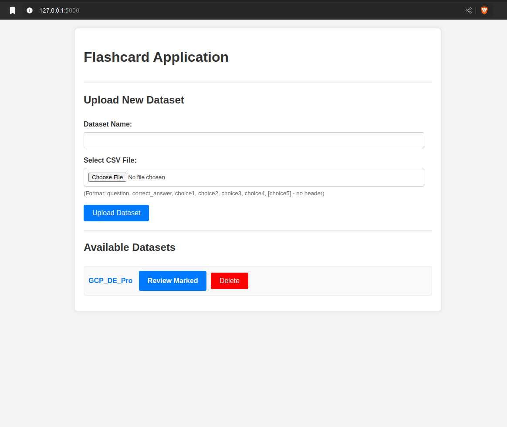
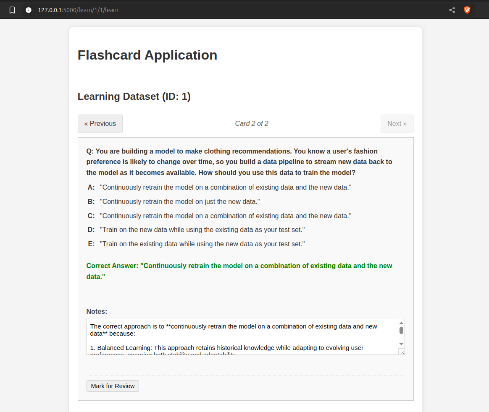

Vibe coding Flashcard Flask App
by thevix
Context (Rất quan trọng cho cả người đọc và LLM)
Tác giả đang trong thời gian ôn luyện để thi chứng chỉ AWS và GCP, nên đã tìm tới các exam dump để làm quen với đề. Tuy nhiên, các trang này không đem lại trải nghiệm học tập tốt:
- Hiển thị cùng lúc nhiều câu hỏi, ít nhất là 5.
- Khi sang trang mới, cần phải chứng minh mình không phải là người máy.
- Muốn đánh dấu một câu hỏi khó để xem lại hoặc thêm ghi chú thì phải dùng một spreadsheet riêng để theo dõi.
- Vân vân..
Vì vậy, tác giả đã quyết định tự làm một web app riêng để thoả mãn nhu cầu cá nhân. Để tiết kiệm thời gian, tránh mất tinh thần học tập, tác giả đã Vibe coding cùng model Gemini Pro 2.5.
Các công cụ mà tác giả sử dụng:
- VS Code
- Roo Code (VS Code plugin)
- Openrouter: Model Gemini Pro 2.5 free (10 calls per day)
- AI Studio: Model Gemini Pro 2.5 API free (10 calls per day)
Lí do tác giả không tự host model bằng Ollama dưới local:
- Hạn chế về phần cứng,
NVIDIA 3060 Ti 12gb VRAMchơi game thì mượt, nhưng chỉ chạy được các model trung bình (< 6B params), context window nhỏ. - Dùng model nhỏ cũng được, tuy nhiên sẽ phải ngồi sửa lỗi và xử lý các vấn đề lặt vặt mà model không nhận biết được.
Vibe coding là gì?
Theo Wikipedia, Vibe coding được định nghĩa là: Code cùng với AI. Coder ra lệnh cho LLM, kiểm tra đầu ra, nếu kết quả đúng như mong muốn thì lưu file lại. Cứ như thế lặp đi lặp lại.
Vibe coding (also vibecoding) is an AI-dependent programming technique where a person describes a problem in a few sentences as a prompt to a large language model (LLM) tuned for coding. The LLM generates software, shifting the programmer’s role from manual coding to guiding, testing, and refining the AI-generated source code. Vibe coding is claimed by its advocates to allow even amateur programmers to produce software without the extensive training and skills required for software engineering. The term was introduced by Andrej Karpathy in February 2025 and listed in the Merriam-Webster Dictionary the following month as a “slang & trending” noun.
Giờ thì bắt đầu thôi.
Phác thảo Web App
Bên dưới là trích lược prompt đầu tiên của tác giả.
I want to develop python webapp that can run in every users local machine. the app is packaged in a container, so everyone will be able to docker up it (or podman up it). the app can be writen in django or flask, or what ever framework that easy to maintain in the future.
the webapp's name is "Flashcard", this is a flashcard app. this app will have a database (sqlite3). this database stores questions, answers and correct answer of the question. each question has only 1 correct answer. the database will be initiated at every first run. at first, user will provide a csv file that have 7 columns and a name for the dataset:
...
Link github full không che
Tóm lại là:
1. Mô tả công nghệ
- Viết một Python web app
- App này được gói trong một container, để khi dùng chỉ cần docker up
- Viết app này bằng django hay flask gì cũng được, miễn là dễ maintain
2. Mô tả tính năng
- Dùng sqlite3 để lưu data cho toàn bộ webapp
- Database này sẽ lưu dữ liệu câu hỏi, câu trả lời và câu trả lời đúng
- Người dùng sẽ cung cấp một file csv để import bộ dữ liệu này
- Người dùng có thể thêm nhiều bộ câu hỏi cho từng loại chứng chỉ khác nhau
- Vân vân...
Chi tiết hoá prompt
Roo Code có một tính năng là dùng AI để chi tiết hoá prompt đầu vào của người dùng.
Tại sao phải làm vậy? Prompt càng chi tiết thì các Model càng dễ hiểu và trả ra kết quả chính xác hơn.
Bên dưới đây là 10 dòng đầu của đoạn prompt đã được bổ sung thêm thông tin:
Develop a Python web application named "Flashcard", designed to run locally on user machines via Docker or Podman. Use the Flask framework and SQLite3 for the database.
**Core Requirements:**
1. **Containerization:** Package the application in a Docker container. Provide a `Dockerfile` using a Python base image (e.g., `python:3.10-slim`), a `requirements.txt` file (including Flask), and instructions for building and running the container, ensuring data persistence via volume mounting for the database and user progress. The application should be accessible via a mapped port (e.g., 5000).
2. **Database (`flashcard.db`):**
* Use SQLite3, stored within the persistent volume (`/data/flashcard.db`).
* Schema:
* `datasets` table: `id` (INTEGER PRIMARY KEY AUTOINCREMENT), `name` (TEXT UNIQUE NOT NULL).
* `cards` table: `id` (INTEGER PRIMARY KEY AUTOINCREMENT), `dataset_id` (INTEGER, FOREIGN KEY (`dataset_id`) REFERENCES `datasets` (`id`)), `question` (TEXT NOT NULL), `correct_answer` (TEXT NOT NULL), `choice1` (TEXT NOT NULL), `choice2` (TEXT NOT NULL), `choice3` (TEXT NOT NULL), `choice4` (TEXT NOT NULL), `choice5` (TEXT).
* Initialization: Automatically create the database and tables if they don't exist on application startup.
Đây là link github full không che
AI đã tự động thêm những chi tiết rất technical vào đoạn prompt phác thảo ban đầu:
- Python base image cho container
- Requirement file
- Persistence volume
- Port
- Tự thiết kế schema cho database
- …
Dùng Architecture thiết kế hệ thống
Sau khi đã hài lòng với đoạn prompt cung cấp thông tin công nghệ cần sử dụng và các tính năng cần có của web app, tác giả dùng AI Agent Architecture để thiết kế chi tiết hệ thống. Architecture này cũng đảm nhiệm vai trò phân tách các giai đoạn làm việc để đảm bảo AI Agent Developer sẽ dễ dàng thực hiện.
Cuối cùng, Agent này xuất ra một file PLAN.MD để có thể đọc được nhiều lần về sau mà không cần phải hỏi lại user.
Đầu tiên, PLAN.MD có đoạn các yêu cầu đã thống nhất:
# Flashcard Application Development Plan
This document outlines the plan for developing the "Flashcard" Python web application using Flask and SQLite, containerized with Docker/Podman.
## Confirmed Specifications
* **CSV Import:** Assume no header row.
* **Styling:** Implement using basic, custom CSS.
* **Error Handling:** Display errors using Flask's flash messaging system.
* **Card Navigation:** No wrap-around (Next/Previous disabled at ends).
* **Answer Reveal:** Clicking the card area reveals the answer.
Sau đó, sẽ là thông tin chi tiết của các Phase, ví dụ đây sẽ là Phần 1 của Phase 1:
## Phase 1: Project Setup \& Core Backend
1. **Define Project Structure:**
* Create the main project directory: `flashcard_app/`
* Inside `flashcard_app/`, create:
* `app.py`: Main Flask application file.
* `database.py`: Module for database interactions.
* `requirements.txt`: Python dependencies.
* `Dockerfile`: Container build instructions.
* `templates/`: Directory for HTML templates.
* `static/`: Directory for CSS/JS files.
* A separate `data/` directory will be used as a volume mount point for persistent storage (`/data/flashcard.db`, `/data/progress.json`).
Chi tiết file PLAN.MD có thể xem tại đây.
Agent này đã chia dự án này thành 4 phases, mỗi phase có từ 2 đến 3 bước nhỏ.
Dùng Developer xây dự án
Roo code sẽ có nút bấm để user chuyển đổi sang AI Agent Developer chuyên dùng để coding. Hơn thế nữa, Roo Code cũng có khả năng nhận biết khi nào thì cần chuyển sang Developer, plugin này sẽ xin phép user để bắt đầu quá trình viết code. Agent này sẽ tự động đọc file PLAN.MD ở trên, và tạo cấu trúc folder, cũng như coding những file .py, .html, .css theo đúng yêu cầu. Mỗi bước, Roo Code đều sẽ xin permission cho những hoạt động của Agent, nếu được phép thì mới được thực hiện. Đặc biệt, sau khi viết một đoạn code, Agent sẽ hỏi ý kiến và xin phép thêm đoạn code này vào code base.
Riêng trong dự án này, vì tác giả đã thử nghiệm Gemini 2.5 Pro từ trước nên rất tin tưởng khả năng coding của model, nên đã bật tính năng tự động cho Agent permission đọc và ghi file. Do đó, toàn bộ quá trình build dự án mất vỏn vẹn 15 phút.
Thành phẩm
Tác giả đã có thể docker build và docker run một web app flask theo đúng nhu cầu ban đầu.
Link GitHub để tải dự án về dùng trên local. Trong repo đã có sẵn file hướng dẫn của Agent Developer, mọi người có thể làm theo.
Hoặc đơn giản hơn, chỉ cần 2 câu lệnh:
make build
make
Web app có 2 trang: trang chủ và trang học
Trang chủ có tính năng upload file csv cho từng dataset (bộ đề ôn) và chọn bộ đề ôn để luyện tập. 
Dataset mẫu có thể tải tại đây
Sau khi bấm vào từng dataset, sẽ vào trang học flashcard. Có thể tiến, lùi và hiện câu trả lời đúng. Ngoài ra, còn có thể đánh dấu câu khó để xem lại, cũng như viết note cho từng câu. 
Chi phí thực hiện
Hoàn toàn free. Tuy nhiên, toàn bộ dữ liệu (token) trong quá trình xây dựng dự án sẽ được Google sử dụng.
Nếu không muốn Google làm vậy, chúng ta có thể sử dụng bản có phí của Gemini 2.5 Pro từ Openrouter. Giá sẽ như sau:
- $1.25/M input tokens
- $10/M output tokens
Toàn bộ dự án dùng:
- 522.0k input tokens
- 29.1k output tokens
Tổng cộng sẽ phải trả $0.9435, 24,275.00 VNĐ.
Rẻ hơn thì có thể dùng deepseek/deepseek-chat-v3-0324 với giá:
- $0.27/M input tokens
- $1.1/M output tokens
Hoặc anthropic/claude-3.7-sonnet thì giá sẽ cao hơn:
- $3/M input tokens
- $15/M output tokens
Kết
- Thay vì chỉ suggest code hoặc sửa những lỗi như trước đây, các Agent đã có thể hoạt động như những Architecture, Developer và Debugger.
Roo Codegiúp việc chuyển đổi qua lại cácAgentrất mượt. - Vì chi phí được tính dựa trên độ dài của context (token), nên phải luôn biết mình muốn gì trước khi bắt đầu. Hoặc, có thể brain storm trong khi làm việc với
Agent Architecture. Như vậy sẽ tiết kiệm hơn là chỉnh sửa trong quá trình dùngAgent Developer. - Chi phí khá rẻ, một ly cà phê vỉa hè cho một web app đúng theo nhu cầu cá nhân, trong vòng 15 phút.
- Không cần phải đầu tư quá nhiều cho phần cứng, bất kì ai cũng có thể tiếp cận các Large Language Model một cách dễ dàng và đa dạng thông qua
Openrouter.
Vibe coding ngay thôi!